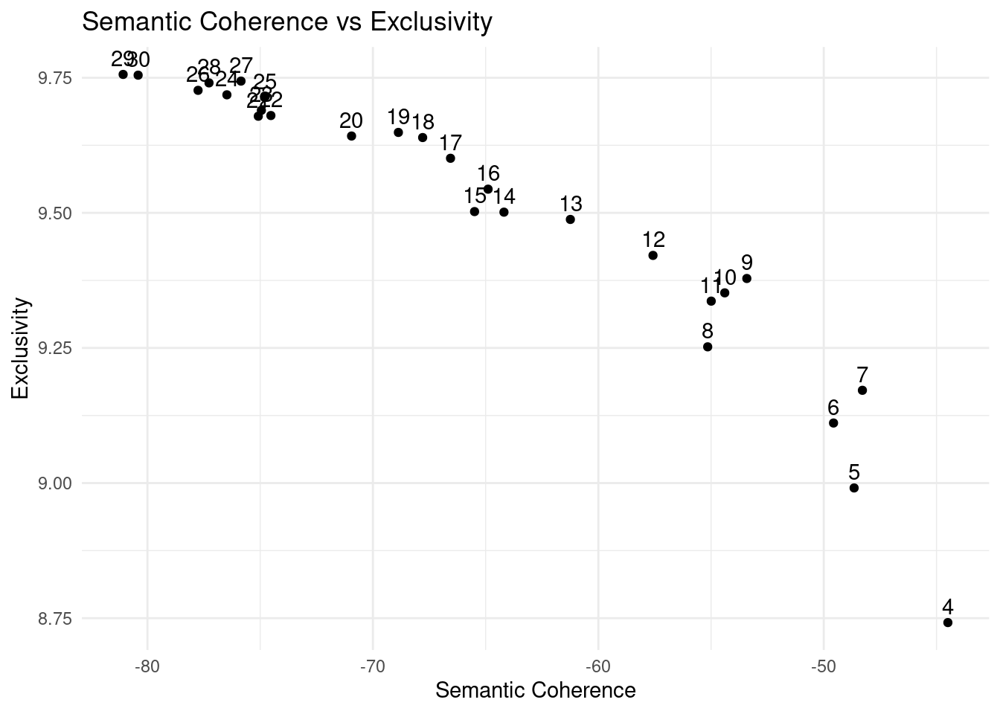
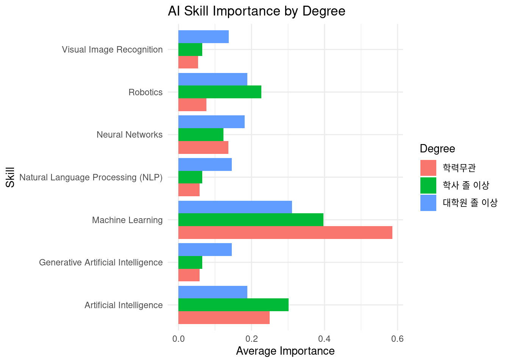

python: /home/bjkim/miniconda3/envs/python311/bin/python3.11
libpython: /home/bjkim/miniconda3/envs/python311/lib/libpython3.11.so
pythonhome: /home/bjkim/miniconda3/envs/python311:/home/bjkim/miniconda3/envs/python311
version: 3.11.9 | packaged by conda-forge | (main, Apr 19 2024, 18:36:13) [GCC 12.3.0]
numpy: /home/bjkim/miniconda3/envs/python311/lib/python3.11/site-packages/numpy
numpy_version: 1.26.4
NOTE: Python version was forced by RETICULATE_PYTHON_FALLBACKSTM
AI Career STM
# df <- data.frame(py_load_object('./1014_non_STEM_marked_v2.pkl'))
df <- readRDS('./1014_non_STEM_marked_v2.rds')# 필요한 컬럼만 활용
df <- df %>% select(RID,Title, Company, Position, Experience, Degree, Offer_type, non.STEM,bigrams)# 주어진 데이터에서 '석사 졸 이상'과 '박사 졸 이상'을 '대학원 졸 이상'으로 변환
df$Degree <- ifelse(df$Degree %in% c('석사 졸 이상', '박사 졸 이상'), '대학원 졸 이상', df$Degree)
# Degree 변수를 factor로 변환
df$Degree <- factor(df$Degree, levels = c('학사 졸 이상', '학력무관', '대학원 졸 이상'))
# 학력무관을 base level로 설정
df$Degree <- relevel(df$Degree, ref = '학력무관')
# 결과 확인
print(levels(df$Degree))[1] "학력무관" "학사 졸 이상" "대학원 졸 이상"df$Experience <- ifelse(df$Experience %in% c('중간급(4-8년차)', '시니어/리더급(9년차 이상)'), '중간/시니어급', df$Experience)
df$Experience <- factor(df$Experience, levels = c('경력무관', '주니어급(1-3년차)', '중간/시니어급'))
# 학력무관을 base level로 설정
df$Experience <- relevel(df$Experience, ref = '경력무관')
# 결과 확인
print(levels(df$Experience))[1] "경력무관" "주니어급(1-3년차)" "중간/시니어급" # TRUE를 'non_STEM', FALSE를 'STEM'으로 변환
df$non.STEM <- ifelse(df$non.STEM == TRUE, 'non_STEM', 'STEM')
# factor 변수로 변환
df$non.STEM <- factor(df$non.STEM, levels = c('STEM', 'non_STEM'))
df <- df %>% rename(STEM = non.STEM)
# non_stem을 base level로 설정
df$STEM <- relevel(df$STEM, ref = 'non_STEM')
# 결과 확인
print(table(df$STEM))
non_STEM STEM
769 1005 df <- df %>% filter(!is.na(Degree)) # NA 값이 있는 행 제거# 토큰 리스트->문자열 처리 (for STM)
df$bigrams <- map_chr(df$bigrams,str_c,collapse=' ')# 데이터에 결측치가 있는지 확인
sum(is.na(df))[1] 0stopwords <- c('2024','_')myprocess <- textProcessor(df$bigrams, metadata = df ,wordLengths=c(2,Inf),lowercase = F,
removenumbers = F, removepunctuation = F, removestopwords = F, stem = F,customstopwords = stopwords)Building corpus...
Remove Custom Stopwords...
Creating Output... myprocessA text corpus with 1774 documents, and an 9987 word dictionary.length(myprocess$docs.removed)[1] 0# N개 이상의 문서에서 등장한 단어만 사용(lower.thresh)
out <- prepDocuments(myprocess$documents, myprocess$vocab, myprocess$meta,lower.thresh = 50,verbose = F)plot(model1_searchK)model1_res <- model1_searchK$results
model1_res <- unnest(model1_res,c(K,exclus,semcoh))
ggplot(model1_res, aes(x = semcoh, y = exclus, label = K)) +
geom_point() +
geom_text(vjust = -0.5, hjust = 0.5) +
labs(x = "Semantic Coherence", y = "Exclusivity", title = "Semantic Coherence vs Exclusivity") +
theme_minimal()
# 모델 결과에서 데이터 준비
model1_res <- model1_searchK$results
model1_res <- unnest(model1_res, c(K, exclus, semcoh))
# 고해상도 PNG로 저장
png(filename = "Semantic_Coherence_vs_Exclusivity_High_Res.png", width = 3000, height = 1500, res = 600)
# 그래프 생성 (글자 크기 조정)
ggplot(model1_res, aes(x = semcoh, y = exclus, label = K)) +
geom_point() +
geom_text(vjust = -0.5, hjust = 0.5, size = 3) + # 텍스트 크기 조정 (size = 3)
labs(x = "Semantic Coherence", y = "Exclusivity", title = "Semantic Coherence vs Exclusivity") +
theme_minimal() +
theme(
plot.title = element_text(size = 16), # 제목 크기 조정
axis.title = element_text(size = 14), # 축 레이블 크기 조정
axis.text = element_text(size = 12) # 축 눈금 크기 조정
)
# PNG 저장 종료
dev.off()png
2 # 저장된 파일 확인 메시지
print("Semantic_Coherence_vs_Exclusivity_High_Res.png 파일이 저장되었습니다.")[1] "Semantic_Coherence_vs_Exclusivity_High_Res.png 파일이 저장되었습니다."stm_model1 <- stm(out$documents, out$vocab, K=11,
prevalence= ~Degree+Experience+STEM,
data=out$meta, init.type="Spectral",seed=2024,
verbose = F)labelTopics(stm_model1, n = 10)Topic 1 Top Words:
Highest Prob: 모델, 기계학습, 학습, 딥러닝, 머신러닝_엔지니어, 프레임_워크, Tensorflow, PyTorch, 개발, 사용
FREX: 기계학습, 모델, 학습, PyTorch, AIML, 프레임_워크, Engineering, 배포, Computer, Tensorflow
Lift: Science, Computer, GPU, Engineering, 기계학습, 수상, AIML, PyTorch, 배포, 모델
Score: Science, 모델, 기계학습, PyTorch, 딥러닝, Tensorflow, Computer, 학습, 머신러닝_엔지니어, 서빙
Topic 2 Top Words:
Highest Prob: 지원, 우대, 졸업, 사유, 채용, 경우, 취업, 입사, 국가, 직무
FREX: 취업, 채용, 서류, 경우, 의거, 입사, 장애인, 법령, 사유, 졸업
Lift: 서류, 허위, 취업, 건강, 기재, 의거, 취소, 채용, 이내, 법령
Score: 건강, 채용, 취업, 서류, 입사, 경우, 의거, 법령, 취소, 허위
Topic 3 Top Words:
Highest Prob: 연구, 분야, 딥러닝, 논문, 알고리즘, 리서치, 컴퓨터_비전, 영상, 이상, AI
FREX: 연구, 영상, 컴퓨터_비전, 의료, 논문, 학회, 컴퓨터공학_전자공학, 딥러닝, 알고리즘, 3D
Lift: 박사, 의료, 영상, 3D, 기계공학, 학회, 컴퓨터_비전, 연구, 컴퓨터공학_전자공학, 저널
Score: 박사, 연구, 딥러닝, 논문, 컴퓨터_비전, 영상, 의료, 3D, 알고리즘, 학회
Topic 4 Top Words:
Highest Prob: 기술, AI, 능력, 프로젝트, 다양, 협업, 이해, 고객, 문제_해결, 문제
FREX: 새롭, 협업, 문제, 디자인, 원활, PMPO, 커뮤니케이션, 해결, 게임, 제작
Lift: PMPO, 이해관계자, 디자인, 시키, 혁신, 기회, 원활, 뛰어나, 새롭, 역할
Score: PMPO, AI, 게임, 기술, 고객, 새롭, 협업, 문제, 문제_해결, 제품
Topic 5 Top Words:
Highest Prob: 데이터, 데이터_분석, 분석, 활용, 비즈니스, 기반, 서비스, SQL, 능력, 지표
FREX: 지표, 시각, 비즈니스, 대시보드, BI, 인사이트, 추출, AB, 의사_결정, 가설
Lift: Tableau, AB, BI, 대시보드, 인사이트, 지표, 가설, 시각, 의사_결정, 추출
Score: Tableau, 데이터_분석, 지표, 대시보드, BI, AB, SQL, 데이터, 비즈니스, 가설
Topic 6 Top Words:
Highest Prob: 개발, 이상, 보유자, 경험자, 경력, 시스템, 기술, SW, 물류, 검증
FREX: 경험자, 보유자, 물류, 제어, SW, 경력, 시스템, 전자, 이상, 개발
Lift: 물류, 제어, 경험자, 보유자, 전자, SW, 전기, 계열, 학력, 경력자
Score: 물류, 보유자, 경험자, 제어, SW, 개발, 시스템, 전자, 전기, 계열
Topic 7 Top Words:
Highest Prob: 개발, AI, 기술, 서비스, 기반, 활용, LLM, 자연어, 보유, 이해
FREX: LLM, AI, 자연어, 서비스, 생성형_AI, 상용, 기술, 개발, 기반, 최신
Lift: 엔진, RAG, LLM, 상용, 언어_모델, 텍스트, 자연어, 검색, 생성형_AI, 자연어_처리
Score: 엔진, LLM, 자연어, AI, 개발, 기술, 상용, 생성형_AI, 서비스, 언어_모델
Topic 8 Top Words:
Highest Prob: 업무, 전공_무관, 가능, 정보, 분석, 지원, 작성, 사용, 상품, 리서치
FREX: 정보, 전공_무관, 업무, 상품, 조사, 작성, 가능, 프로그램, 문서, 자료
Lift: 정보, 조사, 상품, 전공_무관, 자료, 업무, 프로그램, 적극, 경영, 작성
Score: 정보, 전공_무관, 업무, 조사, 분석, 가능, 상품, 작성, 지원, 빅데이터
Topic 9 Top Words:
Highest Prob: 운영, 관리, 사업, 기획, IT, 역량, 보안, 프로젝트, 플랫폼, 고객
FREX: 사업, IT, 보안, 기획, 대응, 컨설팅, 관리, 운영, 수립, 전략_수립
Lift: 보안, IT, 대응, 디지털, 사업, 컨설팅, 활동, ICT, 기획, 전략_수립
Score: 보안, IT, 사업, 기획, ICT, 운영, 관리, 영업, 수립, 자격증
Topic 10 Top Words:
Highest Prob: 데이터, 개발, 운영, 구축, 시스템, 설계, 파이프라인, 환경, 플랫폼, 기반
FREX: 파이프라인, 클라우드, 구축, AWS, 환경, 용량, 운영, 데이터, Data, 엔지니어_컴퓨터공학
Lift: 엔지니어_컴퓨터공학, Kafka, 파이프라인, 클라우드, Hadoop, 용량, AWS, Kubernetes, 분산, Airflow
Score: 엔지니어_컴퓨터공학, 데이터, 운영, 파이프라인, 구축, Kafka, 시스템, 클라우드, AWS, Spark
Topic 11 Top Words:
Highest Prob: 데이터, 분석, 데이터_분석, 컴퓨터공학, 모델링, 통계, 활용, 통계학, 능력, 분야
FREX: 모델링, 통계학, 통계, 컴퓨터공학, 예측, 데이터_분석, 데이터사이언티스트, 산업공학, 분석, 수학
Lift: 통계학, 데이터사이언티스트, 예측, 모델링, 과학, 사이언스, 통계, 산업공학, 수학, 컴퓨터공학
Score: 통계학, 데이터_분석, 통계, 예측, 데이터, 모델링, 분석, 데이터사이언티스트, 과학, 컴퓨터공학 plot(stm_model1,type='summary',labeltype = 'frex',n=10)# STM 모델에서 labelTopics() 함수 실행
topic_labels <- labelTopics(stm_model1, n = 10)
# 토픽의 개수 추출 (토픽 개수에 맞춰)
num_topics <- nrow(topic_labels$prob)
# 토픽 비중 계산 (각 토픽의 평균 비중을 계산)
topic_proportions <- colMeans(stm_model1$theta) *100
# 각 토픽에 대한 상위 단어를 데이터프레임으로 변환
topic_data <- data.frame(
Topic = 1:num_topics,
Proportion = topic_proportions, # 각 토픽의 비중 추가
Highest_Prob = sapply(1:num_topics, function(i) paste(topic_labels$prob[i, ], collapse = ", ")),
FREX = sapply(1:num_topics, function(i) paste(topic_labels$frex[i, ], collapse = ", ")),
Lift = sapply(1:num_topics, function(i) paste(topic_labels$lift[i, ], collapse = ", ")),
Score = sapply(1:num_topics, function(i) paste(topic_labels$score[i, ], collapse = ", "))
)
# 데이터프레임 확인
print(head(topic_data)) Topic Proportion
1 1 8.427351
2 2 7.402545
3 3 9.839896
4 4 10.526301
5 5 9.748065
6 6 8.791414
Highest_Prob
1 모델, 기계학습, 학습, 딥러닝, 머신러닝_엔지니어, 프레임_워크, Tensorflow, PyTorch, 개발, 사용
2 지원, 우대, 졸업, 사유, 채용, 경우, 취업, 입사, 국가, 직무
3 연구, 분야, 딥러닝, 논문, 알고리즘, 리서치, 컴퓨터_비전, 영상, 이상, AI
4 기술, AI, 능력, 프로젝트, 다양, 협업, 이해, 고객, 문제_해결, 문제
5 데이터, 데이터_분석, 분석, 활용, 비즈니스, 기반, 서비스, SQL, 능력, 지표
6 개발, 이상, 보유자, 경험자, 경력, 시스템, 기술, SW, 물류, 검증
FREX
1 기계학습, 모델, 학습, PyTorch, AIML, 프레임_워크, Engineering, 배포, Computer, Tensorflow
2 취업, 채용, 서류, 경우, 의거, 입사, 장애인, 법령, 사유, 졸업
3 연구, 영상, 컴퓨터_비전, 의료, 논문, 학회, 컴퓨터공학_전자공학, 딥러닝, 알고리즘, 3D
4 새롭, 협업, 문제, 디자인, 원활, PMPO, 커뮤니케이션, 해결, 게임, 제작
5 지표, 시각, 비즈니스, 대시보드, BI, 인사이트, 추출, AB, 의사_결정, 가설
6 경험자, 보유자, 물류, 제어, SW, 경력, 시스템, 전자, 이상, 개발
Lift
1 Science, Computer, GPU, Engineering, 기계학습, 수상, AIML, PyTorch, 배포, 모델
2 서류, 허위, 취업, 건강, 기재, 의거, 취소, 채용, 이내, 법령
3 박사, 의료, 영상, 3D, 기계공학, 학회, 컴퓨터_비전, 연구, 컴퓨터공학_전자공학, 저널
4 PMPO, 이해관계자, 디자인, 시키, 혁신, 기회, 원활, 뛰어나, 새롭, 역할
5 Tableau, AB, BI, 대시보드, 인사이트, 지표, 가설, 시각, 의사_결정, 추출
6 물류, 제어, 경험자, 보유자, 전자, SW, 전기, 계열, 학력, 경력자
Score
1 Science, 모델, 기계학습, PyTorch, 딥러닝, Tensorflow, Computer, 학습, 머신러닝_엔지니어, 서빙
2 건강, 채용, 취업, 서류, 입사, 경우, 의거, 법령, 취소, 허위
3 박사, 연구, 딥러닝, 논문, 컴퓨터_비전, 영상, 의료, 3D, 알고리즘, 학회
4 PMPO, AI, 게임, 기술, 고객, 새롭, 협업, 문제, 문제_해결, 제품
5 Tableau, 데이터_분석, 지표, 대시보드, BI, AB, SQL, 데이터, 비즈니스, 가설
6 물류, 보유자, 경험자, 제어, SW, 개발, 시스템, 전자, 전기, 계열write.xlsx(topic_data, file = "STM_Topic_Model_Results.xlsx")효과 추정
m1_K <- stm_model1$settings$dim$K
stm_effect_model <- estimateEffect(1:m1_K ~Degree+Experience+STEM,
stm_model1, meta = out$meta, uncertainty = "Global",prior=1e-5)# 토픽 모델의 토픽 분포(theta)로부터 데이터 프레임 생성
topic_document <- data.frame(stm_model1[["theta"]])
# 추가 메타 데이터 컬럼 할당
topic_document$class <- out$meta$Degree
# 토픽 개수를 기반으로 이름 생성
num_topics <- ncol(stm_model1[["theta"]]) # 토픽 모델의 토픽 개수
topic_names <- paste("topic", 1:num_topics, sep = "") # 토픽 이름 생성
# 새로운 컬럼 이름 설정
names(topic_document) <- c(topic_names, "Degree" )topic_document_long <-
topic_document %>%
pivot_longer(
cols = starts_with("topic"),
names_to = "topic",
values_to = "distribution"
) %>%
mutate(
topic = factor(topic, levels = paste0("topic", 1:m1_K))
)# Boxplot 시각화: 학위별로 토픽의 분포 표시
ggplot(topic_document_long, aes(x = topic, y = distribution, fill = Degree)) +
geom_boxplot() +
theme(axis.text.x = element_text(angle = 45, hjust = 1)) +
labs(title = "Topic Distribution by Degree", x = "Topic", y = "Distribution") +
facet_wrap(~Degree, scales = "free")summary(stm_effect_model, topics= 1:m1_K)
Call:
estimateEffect(formula = 1:m1_K ~ Degree + Experience + STEM,
stmobj = stm_model1, metadata = out$meta, uncertainty = "Global",
prior = 1e-05)
Topic 1:
Coefficients:
Estimate Std. Error t value Pr(>|t|)
(Intercept) 0.059844 0.008024 7.458 1.37e-13 ***
Degree학사 졸 이상 -0.020144 0.007481 -2.693 0.00716 **
Degree대학원 졸 이상 -0.018957 0.010747 -1.764 0.07790 .
Experience주니어급(1-3년차) -0.003079 0.007730 -0.398 0.69040
Experience중간/시니어급 -0.003901 0.009496 -0.411 0.68131
STEMSTEM 0.065655 0.007080 9.273 < 2e-16 ***
---
Signif. codes: 0 '***' 0.001 '**' 0.01 '*' 0.05 '.' 0.1 ' ' 1
Topic 2:
Coefficients:
Estimate Std. Error t value Pr(>|t|)
(Intercept) 0.133559 0.010228 13.058 < 2e-16 ***
Degree학사 졸 이상 0.067431 0.009406 7.169 1.11e-12 ***
Degree대학원 졸 이상 0.017697 0.013754 1.287 0.198
Experience주니어급(1-3년차) -0.081001 0.010144 -7.985 2.50e-15 ***
Experience중간/시니어급 -0.093319 0.011966 -7.799 1.06e-14 ***
STEMSTEM -0.078784 0.008874 -8.878 < 2e-16 ***
---
Signif. codes: 0 '***' 0.001 '**' 0.01 '*' 0.05 '.' 0.1 ' ' 1
Topic 3:
Coefficients:
Estimate Std. Error t value Pr(>|t|)
(Intercept) 0.025640 0.008381 3.059 0.00225 **
Degree학사 졸 이상 0.020453 0.007989 2.560 0.01055 *
Degree대학원 졸 이상 0.145603 0.011873 12.263 < 2e-16 ***
Experience주니어급(1-3년차) -0.012268 0.008464 -1.449 0.14741
Experience중간/시니어급 -0.001924 0.010357 -0.186 0.85262
STEMSTEM 0.072499 0.007949 9.121 < 2e-16 ***
---
Signif. codes: 0 '***' 0.001 '**' 0.01 '*' 0.05 '.' 0.1 ' ' 1
Topic 4:
Coefficients:
Estimate Std. Error t value Pr(>|t|)
(Intercept) 0.134251 0.009239 14.532 < 2e-16 ***
Degree학사 졸 이상 -0.033379 0.009160 -3.644 0.000276 ***
Degree대학원 졸 이상 -0.061995 0.012550 -4.940 8.56e-07 ***
Experience주니어급(1-3년차) -0.006453 0.009401 -0.686 0.492531
Experience중간/시니어급 0.006088 0.011084 0.549 0.582885
STEMSTEM -0.005615 0.008511 -0.660 0.509517
---
Signif. codes: 0 '***' 0.001 '**' 0.01 '*' 0.05 '.' 0.1 ' ' 1
Topic 5:
Coefficients:
Estimate Std. Error t value Pr(>|t|)
(Intercept) 0.19242 0.01117 17.219 < 2e-16 ***
Degree학사 졸 이상 -0.11504 0.01073 -10.719 < 2e-16 ***
Degree대학원 졸 이상 -0.12731 0.01378 -9.237 < 2e-16 ***
Experience주니어급(1-3년차) 0.03613 0.01095 3.300 0.000987 ***
Experience중간/시니어급 0.02947 0.01270 2.320 0.020463 *
STEMSTEM -0.06268 0.01002 -6.254 5.01e-10 ***
---
Signif. codes: 0 '***' 0.001 '**' 0.01 '*' 0.05 '.' 0.1 ' ' 1
Topic 6:
Coefficients:
Estimate Std. Error t value Pr(>|t|)
(Intercept) 0.0407071 0.0085328 4.771 1.99e-06 ***
Degree학사 졸 이상 0.0602415 0.0086857 6.936 5.65e-12 ***
Degree대학원 졸 이상 0.1020083 0.0127225 8.018 1.94e-15 ***
Experience주니어급(1-3년차) -0.0035663 0.0097045 -0.367 0.7133
Experience중간/시니어급 0.0273281 0.0119724 2.283 0.0226 *
STEMSTEM -0.0007212 0.0083191 -0.087 0.9309
---
Signif. codes: 0 '***' 0.001 '**' 0.01 '*' 0.05 '.' 0.1 ' ' 1
Topic 7:
Coefficients:
Estimate Std. Error t value Pr(>|t|)
(Intercept) 0.070459 0.008625 8.170 5.83e-16 ***
Degree학사 졸 이상 0.013115 0.008400 1.561 0.11862
Degree대학원 졸 이상 0.059250 0.013322 4.448 9.23e-06 ***
Experience주니어급(1-3년차) 0.018809 0.008733 2.154 0.03140 *
Experience중간/시니어급 0.006891 0.010847 0.635 0.52532
STEMSTEM 0.022133 0.008171 2.709 0.00682 **
---
Signif. codes: 0 '***' 0.001 '**' 0.01 '*' 0.05 '.' 0.1 ' ' 1
Topic 8:
Coefficients:
Estimate Std. Error t value Pr(>|t|)
(Intercept) 0.091770 0.004773 19.226 < 2e-16 ***
Degree학사 졸 이상 0.005862 0.004324 1.356 0.1753
Degree대학원 졸 이상 -0.009375 0.005489 -1.708 0.0878 .
Experience주니어급(1-3년차) -0.020477 0.004429 -4.624 4.04e-06 ***
Experience중간/시니어급 -0.020506 0.005110 -4.013 6.25e-05 ***
STEMSTEM -0.057642 0.004131 -13.953 < 2e-16 ***
---
Signif. codes: 0 '***' 0.001 '**' 0.01 '*' 0.05 '.' 0.1 ' ' 1
Topic 9:
Coefficients:
Estimate Std. Error t value Pr(>|t|)
(Intercept) 0.076293 0.007988 9.551 < 2e-16 ***
Degree학사 졸 이상 0.063044 0.007905 7.976 2.7e-15 ***
Degree대학원 졸 이상 0.021918 0.010591 2.069 0.03866 *
Experience주니어급(1-3년차) 0.024235 0.009042 2.680 0.00742 **
Experience중간/시니어급 0.007939 0.009433 0.842 0.40012
STEMSTEM -0.070867 0.007640 -9.276 < 2e-16 ***
---
Signif. codes: 0 '***' 0.001 '**' 0.01 '*' 0.05 '.' 0.1 ' ' 1
Topic 10:
Coefficients:
Estimate Std. Error t value Pr(>|t|)
(Intercept) 0.14632 0.01196 12.235 < 2e-16 ***
Degree학사 졸 이상 -0.07620 0.01099 -6.934 5.72e-12 ***
Degree대학원 졸 이상 -0.15127 0.01444 -10.474 < 2e-16 ***
Experience주니어급(1-3년차) 0.03969 0.01250 3.175 0.00153 **
Experience중간/시니어급 0.02327 0.01419 1.639 0.10132
STEMSTEM 0.05180 0.01113 4.656 3.46e-06 ***
---
Signif. codes: 0 '***' 0.001 '**' 0.01 '*' 0.05 '.' 0.1 ' ' 1
Topic 11:
Coefficients:
Estimate Std. Error t value Pr(>|t|)
(Intercept) 0.028996 0.007209 4.022 6e-05 ***
Degree학사 졸 이상 0.014326 0.007286 1.966 0.0494 *
Degree대학원 졸 이상 0.021923 0.011296 1.941 0.0524 .
Experience주니어급(1-3년차) 0.007907 0.007150 1.106 0.2689
Experience중간/시니어급 0.018555 0.009508 1.952 0.0511 .
STEMSTEM 0.064120 0.006190 10.359 <2e-16 ***
---
Signif. codes: 0 '***' 0.001 '**' 0.01 '*' 0.05 '.' 0.1 ' ' 1학력 효과
plot.estimateEffect(stm_effect_model, covariate = "Degree",
topics = c(1:m1_K), method = "difference",
model = stm_model1, # to show labels alongside
cov.value1 = "학사 졸 이상", cov.value2 = "대학원 졸 이상",
xlab = "대학원 졸 이상 <------------------------> 학사 졸 이상", xlim = c(-.6, .6),
labeltype = "frex", n = 7,
width = 100, verbose.labels = F)plot.estimateEffect(stm_effect_model, covariate = "Degree",
topics = c(1:m1_K), method = "difference",
model = stm_model1, # to show labels alongside
cov.value1 = "학력무관", cov.value2 = "대학원 졸 이상",
xlab = "대학원 졸 이상 <------------------------> 학력무관", xlim = c(-.6, .6),
labeltype = "frex", n = 7,
width = 100, verbose.labels = F)par(mfrow = c(2, 2)) # 2행 5열로 subplot 배치
# 명목변수의 세 가지 수준에 대한 레이블 설정
level_labels <- c("학력무관", "학사졸 이상", "대학원 졸 이상")
# Degree 변수에 따라 범례를 커스터마이즈하여 그래프 생성
for (i in 1:10) {
plot.estimateEffect(stm_effect_model, covariate = "Degree",
topics = i, method = "pointestimate",
main = paste("Topic", i),
labeltype = "custom", custom.labels = level_labels) # 수준 레이블로 범례 커스터마이즈
}경력 효과
par(mfrow = c(2, 2)) # 2행 5열로 subplot 배치
# 명목변수의 세 가지 수준에 대한 레이블 설정
level_labels <- c('경력무관', '주니어급(1-3년차)', '중간/시니어급')
# Degree 변수에 따라 범례를 커스터마이즈하여 그래프 생성
for (i in 1:10) {
plot.estimateEffect(stm_effect_model, covariate = "Experience",
topics = i, method = "pointestimate",
main = paste("Topic", i),
labeltype = "custom", custom.labels = level_labels) # 수준 레이블로 범례 커스터마이즈
}전공 효과
plot.estimateEffect(stm_effect_model, covariate = "STEM",
topics = c(1:m1_K), method = "difference",
model = stm_model1, # to show labels alongside
cov.value1 = "STEM", cov.value2 = "non_STEM",
xlab = "non_STEM <------------------------> STEM", xlim = c(-.6, .6),
labeltype = "frex", n = 7,
width = 100, verbose.labels = F)
문서별 토픽 비중 (AI 스킬 매칭)
# STM 모델에서 theta 행렬 추출 (각 문서의 토픽 비중)
theta_matrix <- stm_model1$theta # 각 행은 문서, 각 열은 토픽에 대한 비중
# theta 행렬을 데이터프레임으로 변환
theta_df <- as.data.frame(theta_matrix)
# 각 열의 이름을 토픽 번호로 설정 (예: "Topic 1", "Topic 2", ..., "Topic 11")
colnames(theta_df) <- paste("Topic", 1:ncol(theta_df), sep = " ")
# 문서 ID를 추가 (선택 사항: 문서 번호 추가)
theta_df$Document <- 1:nrow(theta_df)
# 결과 확인
head(theta_df) Topic 1 Topic 2 Topic 3 Topic 4 Topic 5 Topic 6
1 0.211125346 0.008542165 0.128714061 0.15877907 0.009846256 0.009219140
2 0.004257993 0.737048328 0.011432210 0.08013756 0.013612074 0.020721010
3 0.003972156 0.741597340 0.007228872 0.08337844 0.026735708 0.013926465
4 0.009485072 0.006310621 0.010008498 0.21130518 0.343488106 0.024404255
5 0.052178763 0.009269816 0.024001946 0.03334752 0.007896664 0.197408938
6 0.011401490 0.002661137 0.001721275 0.08798758 0.084672436 0.002520249
Topic 7 Topic 8 Topic 9 Topic 10 Topic 11 Document
1 0.34788551 0.07132632 0.01433178 0.016722536 0.023507809 1
2 0.01719619 0.05730075 0.04299134 0.008007348 0.007295191 2
3 0.01353350 0.05063381 0.04017648 0.009518810 0.009298424 3
4 0.04932443 0.02120764 0.13945814 0.025131918 0.159876143 4
5 0.29550105 0.04168472 0.08914209 0.237379870 0.012188615 5
6 0.01089915 0.03451250 0.01292545 0.743642990 0.007055749 6# STM 모델에서 theta 행렬 추출 (각 문서의 토픽 비중)
theta_matrix <- stm_model1$theta # 각 행은 문서, 각 열은 토픽에 대한 비중
# 토픽별로 매핑된 스킬과 가중치를 데이터프레임으로 정의
topic_skill_mapping <- data.frame(
Topic = 1:11,
Skills = c("Machine Learning, Neural Networks", # Topic 1
"", # Topic 2 (매핑 없음)
"Visual Image Recognition, Neural Networks", # Topic 3
"Artificial Intelligence", # Topic 4
"Machine Learning", # Topic 5
"Robotics", # Topic 6
"Generative Artificial Intelligence, Natural Language Processing (NLP)", # Topic 7
"", # Topic 8
"Artificial Intelligence", # Topic 9
"Machine Learning", # Topic 10
"Machine Learning"), # Topic 11
Weights = c(0.5, # Topic 1 (2개의 스킬)
0, # Topic 2 (매핑 없음)
0.5, # Topic 3 (2개의 스킬)
1, # Topic 4 (1개의 스킬)
1, # Topic 5 (1개의 스킬)
1, # Topic 6 (1개의 스킬)
0.5, # Topic 7 (2개의 스킬)
0, # Topic 8 (1개의 스킬)
1, # Topic 9 (1개의 스킬)
1, # Topic 10 (1개의 스킬)
1 # Topic 11 (1개의 스킬)
)
)
# 각 문서별 스킬 비중 계산
skill_proportions <- data.frame(
Document = 1:nrow(theta_matrix)
)
# 스킬 리스트
skills <- c("Machine Learning", "Neural Networks", "Visual Image Recognition", "Artificial Intelligence",
"Robotics", "Generative Artificial Intelligence", "Natural Language Processing (NLP)")
# 스킬에 대한 비중 계산을 위한 초기화
for (skill in skills) {
skill_proportions[[skill]] <- 0
}
# 각 문서에 대해 스킬 비중 계산
for (doc in 1:nrow(theta_matrix)) {
for (topic in 1:ncol(theta_matrix)) {
if (topic_skill_mapping$Skills[topic] != "") {
skill_list <- strsplit(topic_skill_mapping$Skills[topic], ", ")[[1]]
weight <- topic_skill_mapping$Weights[topic]
# 각 스킬에 대해 비중 계산
for (skill in skill_list) {
skill_proportions[doc, skill] <- skill_proportions[doc, skill] + theta_matrix[doc, topic] * weight
}
}
}
}
# 결과 확인
head(skill_proportions) Document Machine Learning Neural Networks Visual Image Recognition
1 1 0.15563927 0.169919703 0.0643570303
2 2 0.03104361 0.007845102 0.0057161052
3 3 0.04753902 0.005600514 0.0036144360
4 4 0.53323870 0.009746785 0.0050042490
5 5 0.28355453 0.038090354 0.0120009731
6 6 0.84107192 0.006561383 0.0008606375
Artificial Intelligence Robotics Generative Artificial Intelligence
1 0.1731109 0.009219140 0.173942756
2 0.1231289 0.020721010 0.008598097
3 0.1235549 0.013926465 0.006766749
4 0.3507633 0.024404255 0.024662214
5 0.1224896 0.197408938 0.147750526
6 0.1009130 0.002520249 0.005449573
Natural Language Processing (NLP)
1 0.173942756
2 0.008598097
3 0.006766749
4 0.024662214
5 0.147750526
6 0.005449573write.xlsx(skill_proportions,"skill_proportions.xlsx")# 각 스킬의 중요도를 합산 (전체 문서에서 각 스킬의 비중 합계)
skill_importance <- colSums(skill_proportions[ , -1]) # Document 열 제외
# 데이터프레임으로 변환
skill_importance_df <- data.frame(Skill = names(skill_importance), Importance = skill_importance)
# 막대 그래프로 시각화
p <- ggplot(skill_importance_df, aes(x = reorder(Skill, Importance), y = Importance, fill = Skill)) +
geom_bar(stat = "identity", show.legend = FALSE) +
coord_flip() + # 가로로 시각화
labs(x = "Skill", y = "Importance", title = "AI Skills Importance Across All Documents") +
theme_minimal()
# 고해상도 PNG로 저장
ggsave("AI_Skills_Importance_High_Res.png", plot = p, width = 10, height = 6, dpi = 300)# 파이 차트 시각화
ggplot(skill_importance_df, aes(x = "", y = Importance, fill = Skill)) +
geom_bar(stat = "identity", width = 1) +
coord_polar("y", start = 0) +
labs(title = "AI Skills Importance Across All Documents") +
theme_void() + # 불필요한 요소 제거
theme(legend.position = "right")# df 변수에서 Degree, Experience, STEM 정보 추가
# skill_proportions에 df의 문서별 Degree, Experience, STEM 정보를 결합
skill_proportions$Degree <- df$Degree
skill_proportions$Experience <- df$Experience
skill_proportions$STEM <- df$STEM
# 결과 확인
head(skill_proportions) Document Machine Learning Neural Networks Visual Image Recognition
1 1 0.15563927 0.169919703 0.0643570303
2 2 0.03104361 0.007845102 0.0057161052
3 3 0.04753902 0.005600514 0.0036144360
4 4 0.53323870 0.009746785 0.0050042490
5 5 0.28355453 0.038090354 0.0120009731
6 6 0.84107192 0.006561383 0.0008606375
Artificial Intelligence Robotics Generative Artificial Intelligence
1 0.1731109 0.009219140 0.173942756
2 0.1231289 0.020721010 0.008598097
3 0.1235549 0.013926465 0.006766749
4 0.3507633 0.024404255 0.024662214
5 0.1224896 0.197408938 0.147750526
6 0.1009130 0.002520249 0.005449573
Natural Language Processing (NLP) Degree Experience STEM
1 0.173942756 대학원 졸 이상 경력무관 non_STEM
2 0.008598097 학력무관 경력무관 non_STEM
3 0.006766749 학력무관 경력무관 non_STEM
4 0.024662214 학력무관 주니어급(1-3년차) STEM
5 0.147750526 학사 졸 이상 주니어급(1-3년차) non_STEM
6 0.005449573 학력무관 경력무관 non_STEM# 스킬 비중 데이터를 long 형식으로 변환
skill_long <- skill_proportions %>%
pivot_longer(cols = -c(Document, Degree, Experience, STEM), names_to = "Skill", values_to = "Importance")
# 각 Degree, Experience, STEM에 따른 스킬 중요도를 평균 계산
skill_summary <- skill_long %>%
group_by(Degree, Experience, STEM, Skill) %>%
summarise(Average_Importance = mean(Importance, na.rm = TRUE))`summarise()` has grouped output by 'Degree', 'Experience', 'STEM'. You can
override using the `.groups` argument.write.xlsx(skill_summary,'skill_summary.xlsx')# Degree에 따른 스킬 중요도 시각화
ggplot(skill_summary, aes(x = Skill, y = Average_Importance, fill = Degree)) +
geom_bar(stat = "identity", position = "dodge") +
labs(title = "AI Skill Importance by Degree", x = "Skill", y = "Average Importance") +
theme_minimal() +
coord_flip()
# Experience에 따른 스킬 중요도 시각화
ggplot(skill_summary, aes(x = Skill, y = Average_Importance, fill = Experience)) +
geom_bar(stat = "identity", position = "dodge") +
labs(title = "AI Skill Importance by Experience", x = "Skill", y = "Average Importance") +
theme_minimal() +
coord_flip()# STEM 여부에 따른 스킬 중요도 시각화
ggplot(skill_summary, aes(x = Skill, y = Average_Importance, fill = STEM)) +
geom_bar(stat = "identity", position = "dodge") +
labs(title = "AI Skill Importance by STEM", x = "Skill", y = "Average Importance") +
theme_minimal() +
coord_flip()